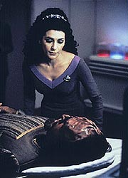
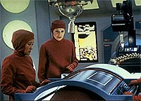
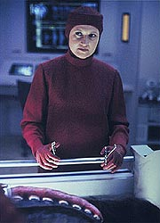
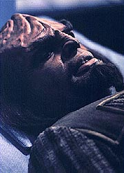
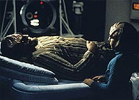

|
MANCHETE
DO EPISDIO
Histria
d verdadeira aula de tica
mdica em show de Beverly Crusher
Episdio
anterior | Prximo
episdio
Sinopse:
Data Estelar: 45587.3.
Worf seriamente ferido quando um raio de fixao falha e faz
com que um conteiner pesado caia sobre ele. Quando ele acorda na
enfermaria, recebido com uma notcia terrvel --ele est
paraplgico da cintura para baixo. A dra. Crusher informa seu
paciente de que ela convocou uma especialista, a neurogeneticista
dra. Toby Russell, mas avisa a Worf que suas chances de recuperar
totalmente suas pernas so mnimas. A notcia afeta o orgulho
Klingon do tenente, e ele se recusa a permitir que qualquer um,
incluindo seu filho Alexander, visite-o.
 Discutindo
o caso de Worf com a dra. Crusher, a dra. Russell prope a
impementao de uma tcnica mdica radical, que ainda est em
estgio experimental. Beverly se recusa, indisposta a arriscar a
vida de Worf quando ele no corre risco de morte. Worf, entretanto,
acredita que sua vida j acabou. Ele pede a Riker que o ajude em
seu suicdio cerimonial, citando a crena de que nenhum Klingon
deveria viver como objeto de pena ou vergonha, mas o
primeiro-oficial reluta.
Mais tarde, a dra. Crusher e a dra. Russel visitam Worf para
discutir as opes. Elas apresentam implantes projetados para
restaurar parcialmente o movimento de suas pernas, mas Worf recusa,
dizendo preferir morrer a ser menos do que o homem que era antes.
Neste momento, a dra. Russell diz a Worf sobre a cirurgia
experimental que poderia restaurar totalmente sua mobilidade.
Este movimento enfurece Beverly Crusher, que acredita que a dra.
Russell est tentando usar Worf como cobaia para testar sua tcnica.
Eles discutem fora do quarto de Worf at serem chamadas para
atender os sobreviventes da queda de uma outra nave estelar. L,
Beverly fica ainda mais enfurecida quando a dra. Russell usa outra tcnica
experimental, que leva morte um paciente. Incapaz de confiar em
sua colega, Crusher dispensa Russell do servio.
 Worf
continua se recusando a considerar os implantes e insiste em querer
morrer. Por causa disso, Picard tenta convencer a dra. Crusher a
permitir que a dra. Russell prossiga com a cirurgia experimental,
mas Beverly permanece firme. Ao mesmo tempo, Riker confronta Worf,
lembrando-o de que a lei Klingon dita que o filho de Worf, e no
Riker, quem deve ajud-lo a cometer o suicdio. Incapaz de negar
isso, Worf abandona a idia de se matar e pede para tentar a
cirurgia da dra. Russell.
Relutantemente, a dra. Crusher concorda, e juntas, ela e a dra.
Russell conduzem a operao. A tcnica parece inicialmente estar
funcionando, mas Worf repentinamente tem uma parada cardaca e
morre na mesa de cirurgia. A dra. Crusher tenta desesperadamente
reviv-lo, mas no fim obrigada a aceitar que ele se foi. Mas graas
a uma reao bioqumica Klingon misteriosa, Worf subitamente
revive alguns minutos depois e comea a se recuperar. A dra.
Crusher, entretanto, incapaz de perdoar Russell por ter colocado
em risco a viad de seu colega e amigo.
Comentrios:
"Ethics"
um episdio que deveria ser de exibio obrigatria em
qualquer curso de medicina. O enredo toca em vrias questes polmicas
da profisso, todas extremamente efervescentes nos dias atuais, e a
presena marcante da dra. Crusher, em um dos poucos episdios em
que ela recebe um papel significativo, um exemplo digno de nota
para qualquer mdico ou aspirante.
 Por
incrvel que possa parecer, o episdio extremamente verossmil,
do comeo ao fim. Embora seja difcil, em princpio, acreditar
que a neurologia esteja to pouco desenvolvida no sculo 24 a
ponto de permitir que um homem fique paraplgico aps quebrar a
coluna, o fato de Worf ser Klingon salva a ptria da premissa. Graas
cultura dos Klingons aplicada aos feridos, mas no mortos, fcil
entender por que esta espcie no se preocupou muito em
desenvolver tratamentos para deficientes fsicos. Seria muito mais
fcil --e honroso, do ponto de vista deles-- matar o doente do que
trat-lo.
Com isso, o cenrio est pronto para duas discusses centrais.
Primeiro, a eutansia --polmico procedimento mdico em que se
exclui o suporte de vida de um paciente, com base no fato de que seu
sofrimento no seria justificvel, uma vez que estaria apenas
adiando sua morte e ampliando uma sobrevida quase insuportvel.
Claro, aqui a coisa fica mais interessante pois a eutansia
elevada a ensima potncia --Worf est muito longe de uma condio
terminal.
Isso aproxima o Klingon muito mais do suicdio do que da eutansia
--e permite a introduo de um fator muito interessante nos casos
suicidas: o egosmo inerente ao ato. Worf, ao querer a prpria
morte, est ignorando todos os seus amigos e familiares, inclusive
o filhinho Alexander, que querem que ele siga vivendo.
 Por
esta razo, o dilogo de Riker com Worf bastante tocante, assim
como a reao do Klingon de desistir do procedimento,
principalmente por seu filho. As cenas entre Worf e Alexander
funcionam de forma bonita e genuna. impossvel ficar alheio
sequncia em que Worf conta a Alexander que desistiu do suicdio e
ir tentar o procedimento mdico experimental. Quando o menino, ao
sair, se volta para olhar para seu pai, possvel ver lgrimas
brotando dos olhos dos telespectadores mais sensveis.
To pungente quanto a cena em que Alexander confronta seu pai
morto. E a "ressurreio" de Worf, embora seja um pouco
forada, funciona bem como um fechamento para o episdio, pois
demonstra o quanto estava errada a posio da dra. Russell, mas
ainda assim d uma chance srie de no perder seu oficial de
segurana favorito.
O segundo tema mdico do episdio, e o mais interessante e atual,
o da chamada medicina experimental com seres humanos. No
poderia haver momento mais propcio para a exibio deste episdio:
vivemos numa poca em que a efervescncia da decodificao do
genoma humano e os primeiros passos da terapia gentica esto
dando o que falar.
bvio que a nica forma definitiva de confirmar a eficcia de
um tratamento testando-o em seres humanos. Mas, antes disso, uma
longa jornada de testes de laboratrio, in vitro e in vivo com
animais, precisa ser percorrida. A tcnica da dra. Russell
claramente ainda tinha muitos passos a percorrer antes de chegar ao
ponto de ser testvel em humanos.
 Entretanto,
ela comete um erro que muitos cientistas correm o risco de cometer
(e alguns cometem com frequncia): colocar a pesquisa frente do
bem-estar dos pacientes. A dra. Crusher faz muito bem ao citar o
princpio de Hipcrates para a medicina, "no fazer
mal". Um mdico jamais pode pregar qualquer tratamento que
possa colocar em risco a vida de um paciente sem antes ter a certeza
de que ele tem uma chance razovel de sucesso e de que ele a
melhor opo vivel. Claramente no era o caso, na tcnica da
dra. Russell.
Nesse ponto, somos confrontados em uma posio estranha em Jornada
nas Estrelas: acabamos ficando mais do lado da dra. Crusher do
que do capito Picard, que defende abertamente o modo de vida
Klingon como uma opo vivel para Riker, e advoga que Beverly
devesse dar a Worf a chance de optar pelo tratamento experimental.
Claro que isso no faz com que Jean-Luc seja um "vilo"
da histria (papel claramente atribudo dra. Russell,
principalmente na cena em que ela "mata" um paciente ao
usar um tratamento experimental), mas nos deixa na cmoda situao
de v-lo se equivocar --o que muito raro ao longo da srie.
Embora ele tome posies muito sensatas e aparentemente defensveis,
bvio que ele desprezou dois fatores fundamentais. Com Beverly,
jogou a tica mdica pela latrina, julgando-a flexvel o
suficiente para adaptar-se ao modo de vida Klingon. Fosse isso
verdade, no seria necessrio nenhum esforo para tratar Worf --Klingons
desprezam feridos como ele, e o procedimento correto seria ajud-lo
a se matar.
Com Riker, colocou os direitos individuais de Worf sua prpria
morte acima dos interesses da nave e de sua tripulao, que
perderia um amigo querido, um colega e um oficial competente, que
poderia muito bem recuperar suas funes ao usar os implantes que
devolveriam 60% de sua mobilidade.
E se Picard teve a perder defendendo essas posies, quem saiu
ganhando mais, de longe, foi Beverly Crusher. Normalmente relegada a
um papel nulo ao longo dos episdios, "Ethics"
representou um momento especial para a doutora, que pde mostrar
todos os seus princpios mdicos, sua integridade de carter e
sua competncia. Gates McFadden no perde a oportunidade e nos d
uma de suas melhores interpretaes. A frustrao de Beverly ao
perder Worf na sala de cirurgia indescritvel.
"Ethics" no tem os tiroteios de "The Best
of Both Worlds", as complexidades tcnicas de "Yesterday's
Enterprise", a nostalgia de "Unification"
ou a trama poltica de "Redemption".
Mesmo assim, torna-se um episdio especialssimo pela verdade das
questes que discute e a honestidade e o discernimento com que as
discute. Mais que uma hora de Jornada nas Estrelas, um
aviso para mdicos, cientistas e opinio pblica. o franchise
exercendo seu papel na sociedade, como idealizava seu criador, Gene
Roddenberry.
Citaes:
Worf - "Doctor,
I will not attempt to leave sickbay without your approval. The
restraining field is not necessary."
("Doutora, eu no tentarei sair da enfermaria sem sua aprovao.
O campo de restrio no necessrio.")
Crusher - "Worf, there is no restraining field."
("Worf, no h campo de restrio.")
Crusher - "Be my guest. Just don't expect a lot of
conversation. He is in full Klingon-mode: honorable, strong and
closed-minded."
("Por favor. S no espere muito papo. Ele est com sua
configurao Klingon ativada: honrado, forte e cabea-dura.")
Trivia:
 Os
uniformes cirrgicos de cor vermelha voltam a aparecer nesse episdio.
Eles j haviam sido vistos em "Samaritan Snare",
do segundo ano. Os
uniformes cirrgicos de cor vermelha voltam a aparecer nesse episdio.
Eles j haviam sido vistos em "Samaritan Snare",
do segundo ano.
Alexander (Brian Bonsall) volta a aparecer. Seu prximo episdio
ser "Cost of Living", em
quatro semanas.
Outro personagem que reaparece a enfermeira Ogawa. Ela estava
sumida desde o episdio "The
Game". Patty Yasutake volta como Ogawa no episdio "Cause
and Effect", em duas semanas.
Ficha
tcnica:
Histria de Sara Charno &
Stuart Charno
Roteiro de Ronald D. Moore
Direo de Chip Chalmers
Exibido em 02/03/1992
Produo: 116
Elenco:
Patrick Stewart como
Jean-Luc Picard
Jonathan Frakes como William Thomas Riker
Brent Spiner como Data
LeVar Burton como Geordi La Forge
Michael Dorn como Worf
Gates McFadden como Beverly Crusher
Marina Sirtis como Deanna Troi
Elenco convidado:
Caroline Kava como
Dra. Toby Russell
Brian Bonsall como Alexander
Patty Yasutake como enfermeira Alyssa Ogawa
Episdio
anterior | Prximo
episdio
|